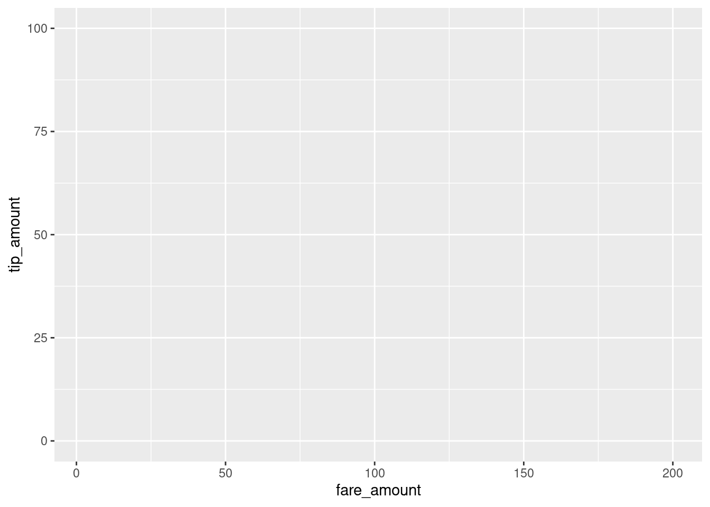
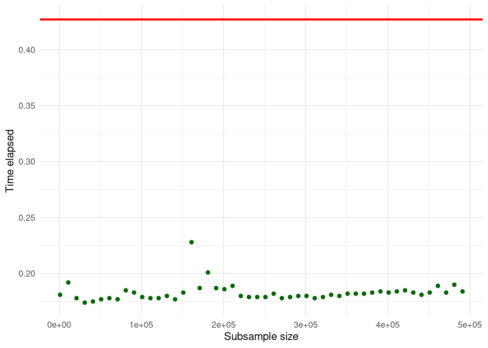
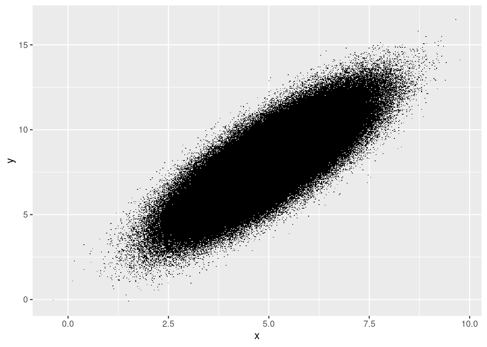
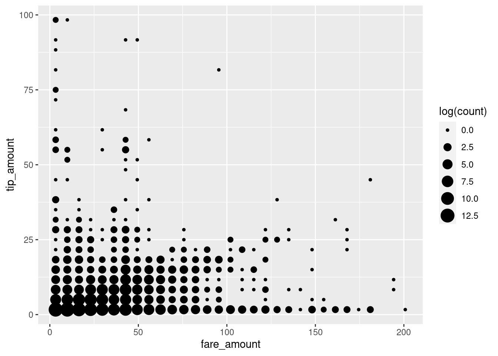
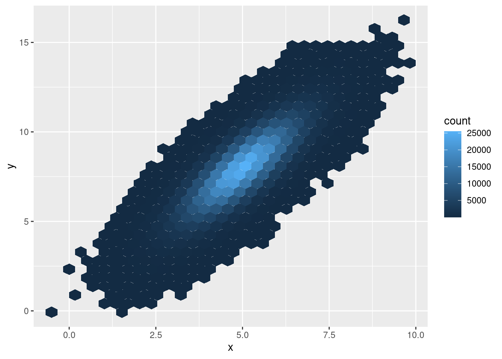
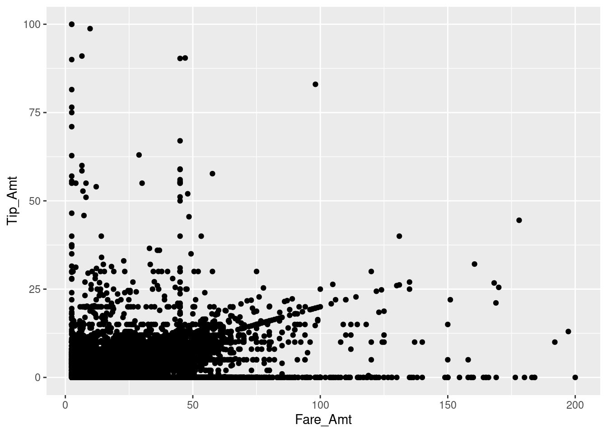

Chapter 10 (Big) Data Visualization
10.1 Data Set
In this tutorial we will work with the TLC data used in the data aggregation session. The raw data consists of several monthly CSV-files and can be downloaded via the TLC’s website. Again, we work only with the first million observations.
In order to better understand the large data set at hand (particularly regarding the determinants of tips paid) we use ggplot2 to visualize some key aspects of the data.
First, let’s look at the raw relationship between fare paid and the tip paid. We set up the canvas with ggplot.
# load packages
library(ggplot2)
# set up the canvas
taxiplot <- ggplot(taxi, aes(y=tip_amount, x= fare_amount))
taxiplot
Now we visualize the co-distribution of the two variables with a simple scatter-plot.
# simple x/y plot
taxiplot +
geom_point()
Note that this took quite a while, as R had to literally plot one million dots on the canvas. Moreover many dots fall within the same area, making it impossible to recognize how much mass there actually is. This is typical for visualization exercises with large data sets. One way to improve this, is by making the dots more transparent by setting the alpha parameter.
# simple x/y plot
taxiplot +
geom_point(alpha=0.2)
Alternatively, we can compute two-dimensional bins. Thereby, the canvas is split into rectangles and the number of observations falling into each respective rectangle is computed. The visualization is based on plotting the rectangles with counts greater than 0 and the shading of the rectangles indicates the count values.
# 2-dimensional bins
taxiplot +
geom_bin2d()
A large part of the tip/fare observations seem to be in the very lower-left corner of the pane, while most other trips seem to be evenly distributed. However, we fail to see slighter differences in this visualization. In order to reduce the dominance of the 2d-bins with very high counts, we display the natural logarithm of counts and display the bins as points.
# 2-dimensional bins
taxiplot +
stat_bin_2d(geom="point",
mapping= aes(size = log(..count..))) +
guides(fill = FALSE)
We note that there are many cases with very low fare amounts, many cases with no or hardly any tip, and quite a lot of cases with very high tip amounts (in relation to the rather low fare amount). In the following, we dissect this picture by having a closer look at ‘typical’ tip amounts and whether they differ by type of payment.
# compute frequency of per tip amount and payment method
taxi[, n_same_tip:= .N, by= c("tip_amount", "payment_type")]
frequencies <- unique(taxi[payment_type %in% c("credit", "cash"),
c("n_same_tip", "tip_amount", "payment_type")][order(n_same_tip, decreasing = TRUE)])
# plot top 20 frequent tip amounts
fare <- ggplot(data = frequencies[1:20], aes(x = factor(tip_amount), y = n_same_tip))
fare + geom_bar(stat = "identity") 
Indeed, paying no tip at all is quite frequent, overall.40 The bar plot also indicates that there seem to be some ‘focal points’ in the amount of tips paid. Clearly, paying one USD or two USD is more common than paying fractions. However, fractions of dollars might be more likely if tips are paid in cash and customers simply add some loose change to the fare amount paid.
fare + geom_bar(stat = "identity") +
facet_wrap("payment_type") 
Clearly, it looks like trips paid in cash tend not to be tipped (at least in this subsample).
Let’s try to tease this information out of the initial points plot. Trips paid in cash are often not tipped, we thus should indicate the payment method. Moreover, tips paid in full dollar amounts might indicate a habit.
# indicate natural numbers
taxi[, dollar_paid := ifelse(tip_amount == round(tip_amount,0), "Full", "Fraction"),]
# extended x/y plot
taxiplot +
geom_point(alpha=0.2, aes(color=payment_type)) +
facet_wrap("dollar_paid")
Now the picture is getting clearer. Paying tip seems to follow certain rules of thumb. Certain fixed amounts tend to be paid independent of the fare amount (visible in the straight lines of dots on the right-hand panel). At the same time, the pattern in the left panel indicates another habit: computing the amount of tip as a linear function of the total fare amount (‘pay 10% tip’). A third habit might be to determine the amount of tip by ‘rounding up’ the total amount paid. In the following, we try to tease the latter out, only focusing on credit card payments.
taxi[, rounded_up := ifelse(fare_amount + tip_amount == round(fare_amount + tip_amount, 0),
"Rounded up",
"Not rounded")]
# extended x/y plot
taxiplot +
geom_point(data= taxi[payment_type == "credit"],
alpha=0.2, aes(color=rounded_up)) +
facet_wrap("dollar_paid")
Now we can start modelling. A reasonable first shot is to model the tip amount as a linear function of the fare amount, conditional on the no-zero tip amounts paid as fractions of a dollar.
modelplot <- ggplot(data= taxi[payment_type == "credit" & dollar_paid == "Fraction" & 0 < tip_amount],
aes(x = fare_amount, y = tip_amount))
modelplot +
geom_point(alpha=0.2, colour="darkgreen") +
geom_smooth(method = "lm", colour = "black")## `geom_smooth()` using formula 'y ~ x'
Finally, we prepare the plot for reporting. ggplot2 provides several predefined ‘themes’ for plots which define all kind of aspects of a plot (background color, line colors, font size etc.). The easiest way to tweak the design of your final plot in a certain direction is to just add such a pre-defined theme at the end of your plot. Some of the pre-defined themes allow you to change a few aspects such as the font type and the base size of all the texts in the plot (labels and tick numbers etc.). Here, we use the theme_bw(), increase the font size and switch to serif-type font. theme_bw() is one of the complete themes already shipped with the basic ggplot2 installation.41 Many more themes can be found in additional R packages (see, for example, the ggthemes package).
modelplot <- ggplot(data= taxi[payment_type == "credit" & dollar_paid == "Fraction" & 0 < tip_amount],
aes(x = fare_amount, y = tip_amount))
modelplot +
geom_point(alpha=0.2, colour="darkgreen") +
geom_smooth(method = "lm", colour = "black") +
ylab("Amount of tip paid (in USD)") +
xlab("Amount of fare paid (in USD)") +
theme_bw(base_size = 18, base_family = "serif")## `geom_smooth()` using formula 'y ~ x'
10.2 Excursus: modify and create themes
Apart from using pre-defined themes as illustrated above, we can use the theme() function to further modify the design of a plot. For example, we can print the axis labels (‘axis titles’) in bold.
modelplot <- ggplot(data= taxi[payment_type == "credit" & dollar_paid == "Fraction" & 0 < tip_amount],
aes(x = fare_amount, y = tip_amount))
modelplot +
geom_point(alpha=0.2, colour="darkgreen") +
geom_smooth(method = "lm", colour = "black") +
ylab("Amount of tip paid (in USD)") +
xlab("Amount of fare paid (in USD)") +
theme_bw(base_size = 18, base_family = "serif") +
theme(axis.title = element_text(face="bold"))## `geom_smooth()` using formula 'y ~ x'
There is a large list of plot design aspects that can be modified in this way (see ?theme() for details).
10.2.1 Create your own theme: simple approach
Extensive design modifications via theme() can involve many lines of code, making your plot code harder to read/understand. In practice, you might want to define your specific theme once and then apply this theme to all of your plots. In order to do so it makes sense to choose one of the existing themes as a basis and then modify its design aspects until you have the design you are looking for. Following the design choices in the examples above, we can create our own theme_my_serif() as follows.
# 'define' a new theme
theme_my_serif <-
theme_bw(base_size = 18, base_family = "serif") +
theme(axis.title = element_text(face="bold"))
# apply it
modelplot +
geom_point(alpha=0.2, colour="darkgreen") +
geom_smooth(method = "lm", colour = "black") +
ylab("Amount of tip paid (in USD)") +
xlab("Amount of fare paid (in USD)") +
theme_my_serif## `geom_smooth()` using formula 'y ~ x'
This practical approach does not require you to define every aspect of a theme. If you indeed want completely define every aspect of a theme, you can set complete=TRUE when calling the theme function.
# 'define' a new theme
my_serif_theme <-
theme_bw(base_size = 18, base_family = "serif") +
theme(axis.title = element_text(face="bold"), complete = TRUE)
# apply it
modelplot +
geom_point(alpha=0.2, colour="darkgreen") +
geom_smooth(method = "lm", colour = "black") +
ylab("Amount of tip paid (in USD)") +
xlab("Amount of fare paid (in USD)") +
theme_my_serif## `geom_smooth()` using formula 'y ~ x'
Note that since we have only defined one aspect (bold axis titles), the rest of the elements follow the default theme.
Importantly, the approach outlined above does technically not really create a new theme like theme_bw(), as these pre-defined themes are implemented as functions. Note that we add the new theme simply with + theme_my_serif to the plot (no parentheses). In practice this is the most simple approach and it provides all the functionality you need in order to apply your own ‘theme’ to each of your plots.
10.2.2 Implementing actual themes as functions.
If you really want to implement a theme as a function. The following blueprint can get you started.
# define own theme
theme_my_serif <-
function(base_size = 15,
base_family = "",
base_line_size = base_size/170,
base_rect_size = base_size/170){
theme_bw(base_size = base_size,
base_family = base_family,
base_line_size = base_size/170,
base_rect_size = base_size/170) %+replace% # use theme_bw() as a basis but replace some design elements
theme(
axis.title = element_text(face="bold")
)
}
# apply the theme
# apply it
modelplot +
geom_point(alpha=0.2, colour="darkgreen") +
geom_smooth(method = "lm", colour = "black") +
ylab("Amount of tip paid (in USD)") +
xlab("Amount of fare paid (in USD)") +
theme_my_serif(base_size = 18, base_family="serif")## `geom_smooth()` using formula 'y ~ x'
10.3 Visualize Time and Space
The previous visualization exercises were focused on visually exploring patterns in the tipping behavior of people taking a NYC yellow cap ride. Based on the same data set, will explore the time dimension and spatial dimension of the TLC Yellow Cap data. That is, we explore where trips tend to start and end, depending on the time of the day.
10.3.1 Preparations
For the visualization of spatial data we first load additional packages that give R some GIS features.
# load GIS packages
library(rgdal)
library(rgeos)Moreover, we download and import a so-called ‘shape file’ (a geospatial data format) of New York City. This will be the basis for our visualization of the spatial dimension of taxi trips. The file is downloaded from New York’s Department of City Planning and indicates the city’s community district borders.42
# download the zipped shapefile to a temporary file, unzip
URL <- "https://www1.nyc.gov/assets/planning/download/zip/data-maps/open-data/nycd_19a.zip"
tmp_file <- tempfile()
download.file(URL, tmp_file)
file_path <- unzip(tmp_file, exdir= "data")
# delete the temporary file
unlink(tmp_file)Now we can import the shape file and have a look at how the GIS data is structured.
# read GIS data
nyc_map <- readOGR(file_path[1], verbose = FALSE)
# have a look at the GIS data
summary(nyc_map)## Object of class SpatialPolygonsDataFrame
## Coordinates:
## min max
## x 913175 1067383
## y 120122 272844
## Is projected: TRUE
## proj4string :
## [+proj=lcc +lat_0=40.1666666666667 +lon_0=-74
## +lat_1=41.0333333333333 +lat_2=40.6666666666667
## +x_0=300000 +y_0=0 +datum=NAD83 +units=us-ft
## +no_defs]
## Data attributes:
## BoroCD Shape_Leng Shape_Area
## Min. :101 Min. : 23963 Min. :2.43e+07
## 1st Qu.:206 1st Qu.: 36611 1st Qu.:4.84e+07
## Median :308 Median : 52246 Median :8.27e+07
## Mean :297 Mean : 74890 Mean :1.19e+08
## 3rd Qu.:406 3rd Qu.: 85711 3rd Qu.:1.37e+08
## Max. :595 Max. :270660 Max. :5.99e+08Note that the coordinates are not in the usual longitude and latitude units. The original map uses a different projection than the TLC data of cap trips records. Before plotting, we thus have to change the projection to be in line with the TLC data.
# transform the projection
nyc_map <- spTransform(nyc_map, CRS("+proj=longlat +datum=WGS84 +no_defs +ellps=WGS84 +towgs84=0,0,0"))
# check result
summary(nyc_map)## Object of class SpatialPolygonsDataFrame
## Coordinates:
## min max
## x -74.26 -73.70
## y 40.50 40.92
## Is projected: FALSE
## proj4string : [+proj=longlat +datum=WGS84 +no_defs]
## Data attributes:
## BoroCD Shape_Leng Shape_Area
## Min. :101 Min. : 23963 Min. :2.43e+07
## 1st Qu.:206 1st Qu.: 36611 1st Qu.:4.84e+07
## Median :308 Median : 52246 Median :8.27e+07
## Mean :297 Mean : 74890 Mean :1.19e+08
## 3rd Qu.:406 3rd Qu.: 85711 3rd Qu.:1.37e+08
## Max. :595 Max. :270660 Max. :5.99e+08One last preparatory step is to convert the map data to a data.frame for plotting with ggplot.
nyc_map <- fortify(nyc_map)10.3.2 Pick-up and drop-off locations
Since trips might actually start or end outside of NYC, we first restrict the sample of trips to those within the boundary box of the map. For the sake of the exercise, we only select a random sample of 50000 trips from the remaining trip records.
# taxi trips plot data
taxi_trips <- taxi[start_long <= max(nyc_map$long) &
start_long >= min(nyc_map$long) &
dest_long <= max(nyc_map$long) &
dest_long >= min(nyc_map$long) &
start_lat <= max(nyc_map$lat) &
start_lat >= min(nyc_map$lat) &
dest_lat <= max(nyc_map$lat) &
dest_lat >= min(nyc_map$lat)
]
taxi_trips <- taxi_trips[base::sample(1:nrow(taxi_trips), 50000)]In order to visualize how the cap traffic is changing over the course of the day, we add an additional variable called start_time in which we store the time (hour) of the day a trip started.
taxi_trips$start_time <- hour(taxi_trips$pickup_time)Particularly, we want to look at differences between, morning, afternoon, and evening/night.
# define new variable for facets
taxi_trips$time_of_day <- "Morning"
taxi_trips[start_time > 12 & start_time < 17]$time_of_day <- "Afternoon"
taxi_trips[start_time %in% c(17:24, 0:5)]$time_of_day <- "Evening/Night"
taxi_trips$time_of_day <- factor(taxi_trips$time_of_day, levels = c("Morning", "Afternoon", "Evening/Night"))We initiate the plot by first setting up the canvas with our taxi trips data. Then, we add the map as a first layer.
# set up the canvas
locations <- ggplot(taxi_trips, aes(x=long, y=lat))
# add the map geometry
locations <- locations + geom_map(data = nyc_map,
map = nyc_map,
aes(map_id = id))
locations
Now we can start adding the pick-up and drop-off locations of cap trips.
# add pick-up locations to plot
locations +
geom_point(aes(x=start_long, y=start_lat),
color="orange",
size = 0.1,
alpha = 0.2)
As to be expected, most of the trips start in Manhattan. Now let’s look at where trips end.
# add pick-up locations to plot
locations +
geom_point(aes(x=dest_long, y=dest_lat),
color="steelblue",
size = 0.1,
alpha = 0.2) +
geom_point(aes(x=start_long, y=start_lat),
color="orange",
size = 0.1,
alpha = 0.2)
Incidentally, more trips tend to end outside of Manhattan. And the destinations seem to be broader spread across the city then the pick-up locations. Most destinations are still in Manhattan, though.
Now let’s have a look at how this picture changes depending on the time of the day.
# pick-up locations
locations +
geom_point(aes(x=start_long, y=start_lat),
color="orange",
size = 0.1,
alpha = 0.2) +
facet_wrap(vars(time_of_day))
# drop-off locations
locations +
geom_point(aes(x=dest_long, y=dest_lat),
color="steelblue",
size = 0.1,
alpha = 0.2) +
facet_wrap(vars(time_of_day))
Alternatively, we can plot the hours on a continuous scale.
# drop-off locations
locations +
geom_point(aes(x=dest_long, y=dest_lat, color = start_time ),
size = 0.1,
alpha = 0.2) +
scale_colour_gradient2( low = "red", mid = "yellow", high = "red",
midpoint = 12)
10.4 Excursus: change color schemes
In the example above we use scale_colour_gradient2() to modify the color gradient used to visualize the start time of taxi trips. By default, ggplot would plot the following (default gradient color setting):
# drop-off locations
locations +
geom_point(aes(x=dest_long, y=dest_lat, color = start_time ),
size = 0.1,
alpha = 0.2) 
ggplot2 offers various functions to modify the color scales used in a plot. In the case of the example above, we visualize values of a continuous variable. Hence we use a gradient color scale. In case of categorical variables we need to modify the default discrete color scale.
Recall the plot illustrating tipping behavior, where we highlight in which observations the client payd with credit card, cash, etc.
# indicate natural numbers
taxi[, dollar_paid := ifelse(tip_amount == round(tip_amount,0), "Full", "Fraction"),]
# extended x/y plot
taxiplot +
geom_point(alpha=0.2, aes(color=payment_type)) +
facet_wrap("dollar_paid")
Since we do not further specify the discrete color scheme to be used, ggplot simply uses its default color scheme for this plot. We can change this as follows.
# indicate natural numbers
taxi[, dollar_paid := ifelse(tip_amount == round(tip_amount,0), "Full", "Fraction"),]
# extended x/y plot
taxiplot +
geom_point(alpha=0.2, aes(color=payment_type)) +
facet_wrap("dollar_paid") +
scale_color_discrete(type = c("red", "steelblue", "orange", "purple"))
Or, could there be another explanation for this pattern in the data?↩︎
See the ggplot2 documentation for a list of all pre-defined themes shipped with the basic installation.↩︎
Similar files are provided online by most city authorities in developed countries. See, for example, GIS Data for the City and Canton of Zurich: https://maps.zh.ch/.↩︎